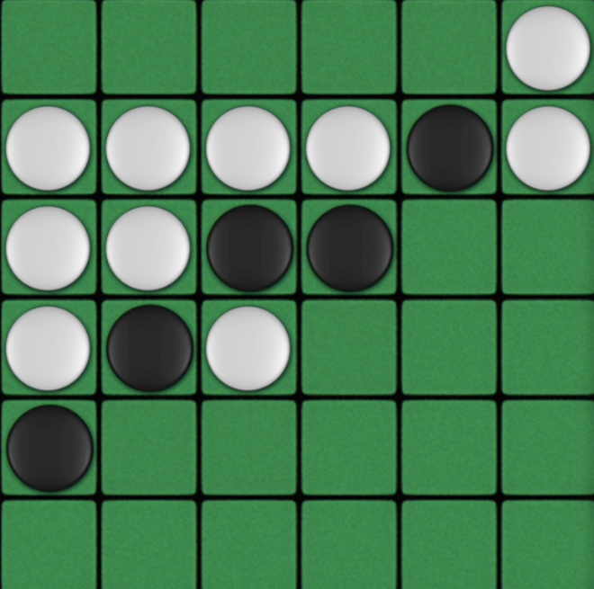

Othello AI BotUtilized: Python
An Othello AI combining MCTS and Minimax + Alpha-Beta pruning search strategies to adapt across game stages. Achieved high winrates against real players and AI.
An Othello AI combining MCTS and Minimax + Alpha-Beta pruning search strategies to adapt across game stages. Achieved high winrates against real players and AI.
Curated promotional content and schedules, led the media team, designed merchandise, and grew engagement by 330.4%.
A comparative analysis of BERT probing and fine-tuning on the AG News dataset, using KNN and logistic regression on frozen embeddings versus end-to-end transformer training, with attention visualizations for interpretability.

A cozy-styled shop management game using C# and the Unity game engine with a team of 4 programmers. Produced original 2D and 3D art assets and animations. Directed the game planning and design process.
A Unity-based mystery murder game where players investigate suspects and crime scenes as a detective. Utilized C# to implement interactive elements, dynamic puzzles, polished visuals, and sound effects. Handled all the art and animation using Procreate.
3D modelled and rigged lowpoly designs of my own cats as League of Legends Champions/Riftbound Deck Legends. Hand-crafted these figurines as blind box figurines, designed the 2D blind box art, and created playing cards with rendered 3D models.

Handwritten character recognition using neural networks. We implemented a multilayer perceptron from scratch, including backpropagation and gradient checking, and evaluated how architecture depth, activation functions, and regularization affect performance. Results are compared against a convolutional neural network baseline implemented in TensorFlow/Keras.

2D animation of a kitchen scene created frame-by-frame.
An application that converts MP3 files into sheet music using audio processing models to extract melodies and recompose them for instruments.

Directed the set design, assisted with pre-production, filming, post-production, and created the 2D animation intro of "Breakfast", a music video by Haleluya Hailu. Now released on Spotify and Youtube.
Handled all communications tasks, created promotional content, and drafted listservs sent to the entire CS undergrad society.